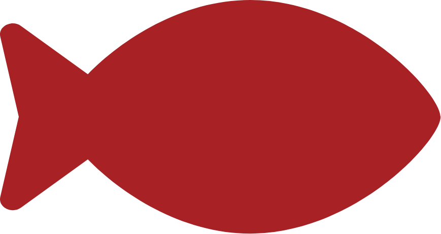
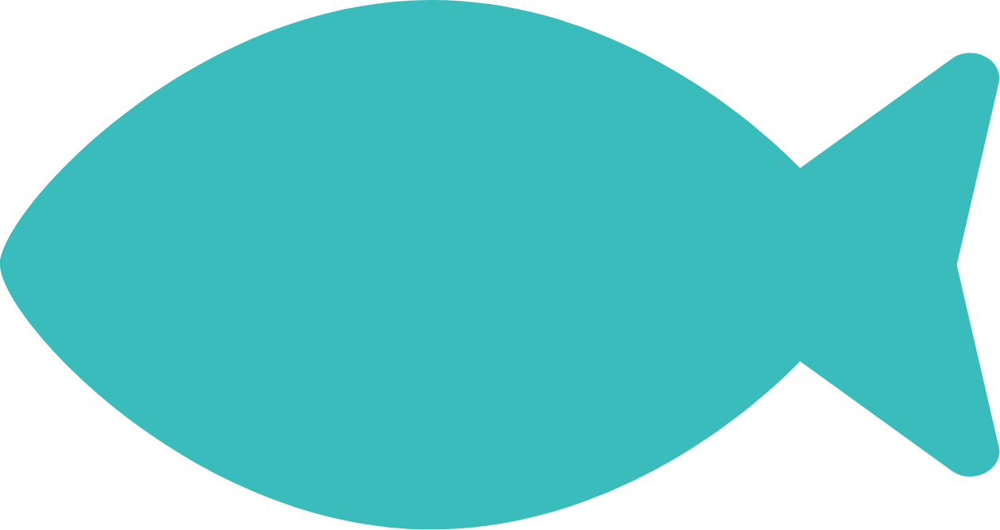

TA POLARISERING PÅ ALVOR
- i sosiale medier
sosiale medier kan både binde folk sammen og splitte folk
stadig bedre teknologi og bruk av algoritmer gjør det lettere å bli møtt av fake news og useriøse aktører
kommentarfelt og ordbruk på sosiale medier blir stadig mer ekstrem
det er derfor lett å drukne i havet av informasjon som stadig dukker opp i den digitale verden
MEN ikke lukk øynene for polarisering

THE RETHINKING MOVEMENT
